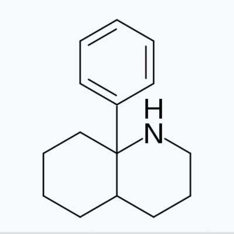

鼠尾草～🌿
@SalviaSWC
@fnggnjn1 我认为，蛋白质毕竟量少，小分子的亲和力再高，只要不是差好几个数量级，小分子与某种蛋白质的结合是不会严重影响它与另一种蛋白质的结合的
不过，这俩都是脏药，确实没什么娱乐价值，甚至没有人在网上写关于它的报告。但是根据LD50数据，色胺的急性毒性和苯乙胺差不多，表明还是存在一些安全性的

Delirium⌬
@fnggnjn1
这涉及到“脱靶效应”
横向对比苯乙胺与色胺，虽然同为单胺释放剂(MRA) 发挥作用，但是当在maoi作用下，二者浓度提高，色胺分子会被血清素受体优先捕获，起血清素激动剂效果，而苯乙胺则会更多起到单胺释放的作用。
其次，ki值只能表示与受体的亲和力，不能区分拮抗，部分激动，与完全激动。 https://t.co/HOMM7U2b3g